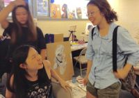

如何挑选申请大学的艺术作品集（五）
＂上帝啊，求你把我带离开这所学校，求你让妈妈不要把我留在这里⋯＂6岁的Yukine第一次走进日本小学校就躲进厕所，一边哭泣一边向天父上帝祈求。死活不愿意再回到教室。是什么气氛让小小的她一下子就感觉不舒服，并且一刻也不能妥协呢？若干年的现在，当我听到这则真实的小故事时，心情沉重难过。
不久以前，Yukine离开美国莎伦画院回亚洲时，除了给自己的作品拍照外，不方便带走一幅大画，她随即取来一把刀子，＂咔嚓＂两下，把画中她最喜欢的一个＂头＂划下来，揣进口袋里带走，帅气非常！可见她不合适被束缚。
有著一头天生的棕色卷发，Yukine却是一个道地日本出生的孩子，父亲是日本早稻田大学的MBA，母亲在日本学商，后来美国哥伦比亚大学取得MBA学位。优秀的东方传统教育，怎么会生出这么一个骨子里酷爱自由的孩子来呢？
我们常说＂上帝造人，每一位都是独一无二的！＂莎伦画院的创办宗旨之一是＂尊重每一个生命的存在价值，传播正确的教育理念＂。
有一种人生来与众不同，他（她）善解人意，与环境相处和谐，乐以助人，获得所有人的好感，但是我可以强烈地感觉到他（她）身上有种力量，不容扭曲、不能屈就。这是他（她）的底线，是他（她）骨子里的冰清玉洁。日后的成功，将由此力量迸发而出！可惜，有这股天生的隐藏的力量的人并不多，或者说，在日后的成长中被一点一点地磨去了棱角。具有这股能力的人，具有天生的人格魅力。 6岁的Yukine的身上不知觉的已经展示出这股精神，她还不知道自己要什么，但是她知道自己不要什么。
Yukine刚到新州莎伦总校第一天，就碰上在这里学画的原＂上海莎伦＂同学，和另几位日本籍学生
Yukine刚到新州莎伦总校第一天，就碰上在这里学画的原＂上海莎伦＂同学，和另几位日本籍学生
Yukine现在是个高中生，人缘极好，魅力来自於天性和教养，气质自然高贵，个性温和善良，待人真诚，脸上总挂着甜美的笑容。对艺术却狂热执著，冷静沉稳。父母没有把自己的喜好和价值观强加在她身上，使她能够自由快乐地成长，自然地显露率性。 Yukine作画喜用黑色，她的黑色不阴沉。她有独立见解，同时谦逊受教，因此她的画风奔放又能突显重点。
就如听歌剧和古典音乐，许多人不能懂，看不懂她的画。因为不𢤦而不喜欢，是常人之天性。许多绘画老师要求学生必须画的和自己一个样子，好像这样才有安全感，或者潜意识里认为自己才是最好的。又有许多老师分辩不清什么是品味、个性、长处、特色，口号上说让＂学生自由发挥＂，实际上是不知道怎么教才好。於是胆子大的孩子胡乱画一气，胆小的不知如何下笔，哭哭啼啼，每次最后都由老师帮忙草草完成。
糊涂粗鲁不是潇洒大气，拘束小气也不是深思熟虑。无论学生的天性酷爱自由，或者偏向细腻，只要合宜引导都能成大器。但是，如果行事风格与绘画作风缺少灵气，那么任何一种性格都是缺乏品质、品味之灾难。
真正的内行人看得懂灵气所在，如果不具备象Yukine那样的天然灵气，也是可以经后天长期训练熏陶而成。需要家长与老师合宜引导。
绘画比任何一种活动更能体现孩子的气质。教学生画画，保留他们各自的天性优点，去除错误缺陷。是在为学生引导人生正确方向，只要方向正确，付出的努力都会有收获。如同你有很昂贵的跑车，加满优质汽油，想去纽约，结果向南一直往普林斯顿大学开去，当然永远都不可能到达纽约。
若能懂得每个孩子，了解他们的内在气质，在申请大学作品集里完整表现，即能展现最高成效，水到渠成。 （2015）